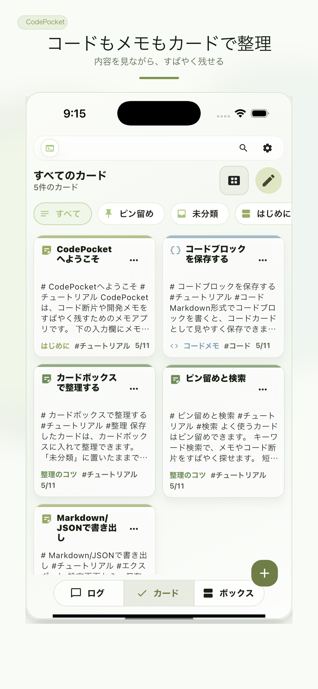
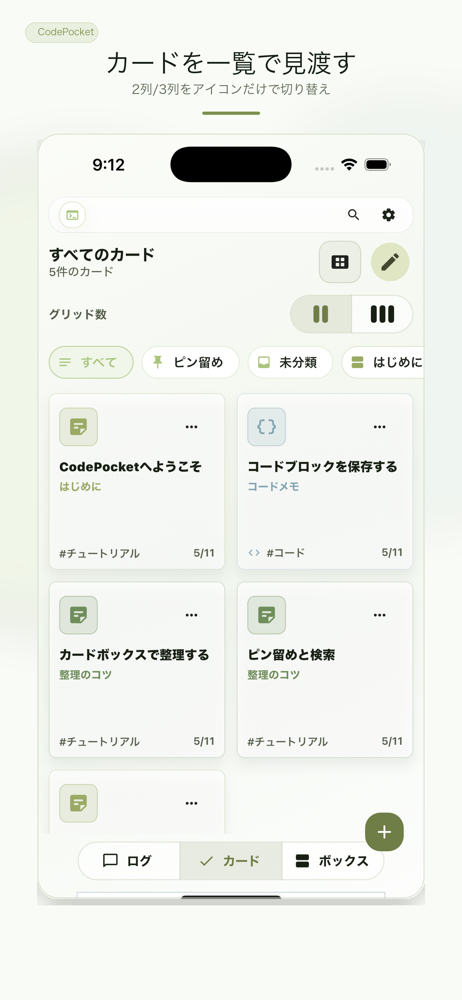
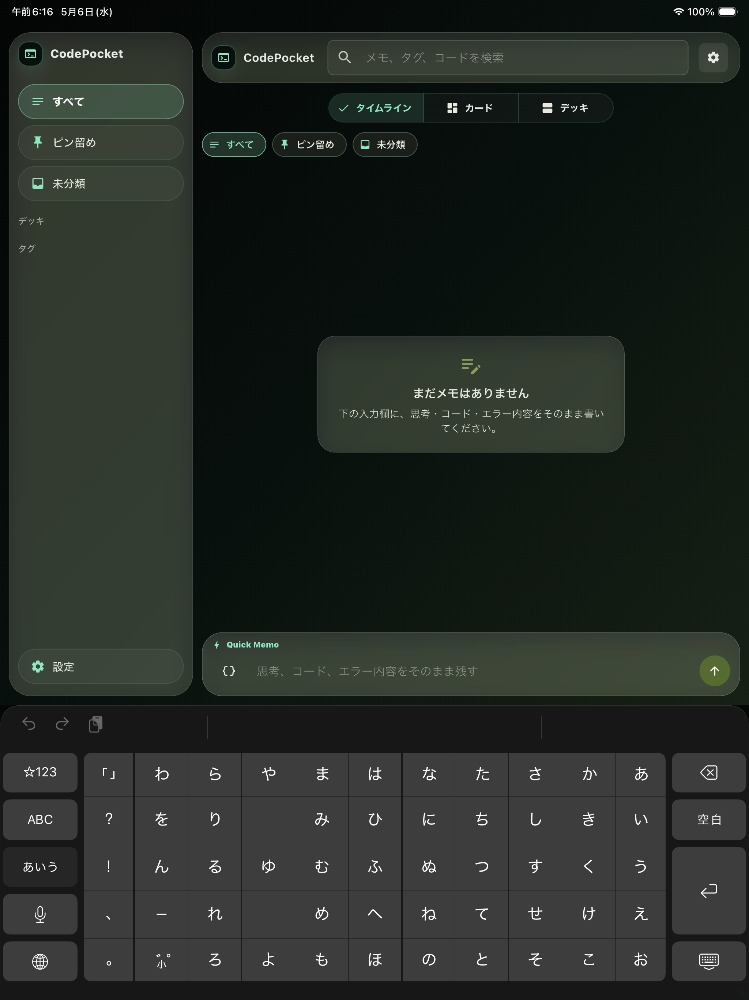
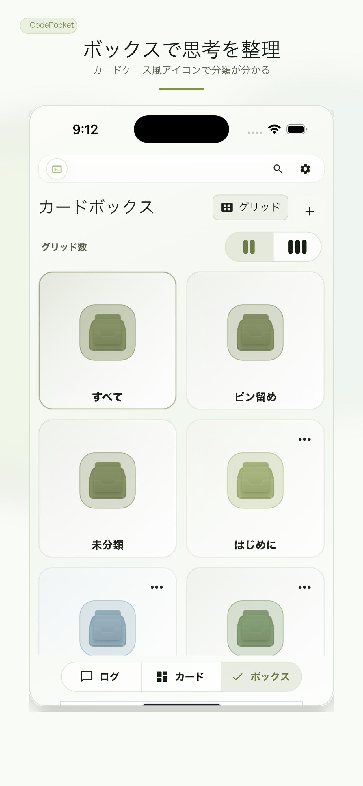

チャット感覚のクイックメモ
短いメモやコードを、思いついた瞬間に残せます。
iPhone / iPadで使える開発メモ
コードや作業メモを、あとで見つかる形に。
思いついたコード断片、エラー内容、ちょっとした作業ログをチャット感覚で残して、 カードとカードボックスで整理できます。


よくある悩み
コード断片をチャットやメモ帳に散らしてしまう。
エラー原因や試したことを、あとから探すのに時間がかかる。
作業ログ、URL、メモ、タグが別々の場所にある。
Macの前を離れたあとでも、iPhoneでさっと残したい。
CodePocketでできること

短いメモやコードを、思いついた瞬間に残せます。
ウォーターフォール、グリッド、リストで読みやすく確認できます。
よく使うメモ、調査ログ、エラー対応を箱ごとに分けられます。
アカウント登録なし。メモ本文はCodePocketの外部サーバーへ送りません。
使い方
思いついた内容を短く入力。コード、URL、エラー内容も残せます。
保存したメモをカード表示で確認。ピン留めや検索も使えます。
プロジェクト別、調査テーマ別など、自分の分け方で整理できます。
移動中や作業の合間に、必要なメモをすぐ見返せます。
対応端末
App Storeの正式URLが確定したら、このページのボタンを差し替えます。
画面イメージ

FAQ
はい。iPhone/iPadだけでもメモを残して見返せます。Mac版は準備中です。
コード断片、エラー内容、作業ログ、調べたURL、あとで試したいアイデアなどに向いています。
CodePocket本体はメモを端末内に保存します。アカウント登録や独自のクラウド同期はありません。
無料提供と継続的な開発のため、一部画面に広告を表示する場合があります。基本機能はそのまま使えます。
現在は仮URLです。正式なCodePocketのApp Store URLが確定したら差し替えます。
Support
Privacy
CodePocket本体は、ユーザーのメモ本文、タグ、カード、カードボックスを外部サーバーへ送信しません。 広告表示のため、Google AdMobなどの第三者広告配信サービスを利用する場合があります。
App Tracking Transparencyを許可しない場合でも、CodePocketの基本機能は利用できます。
Download
まずはiPhone/iPadで使ってみてください。